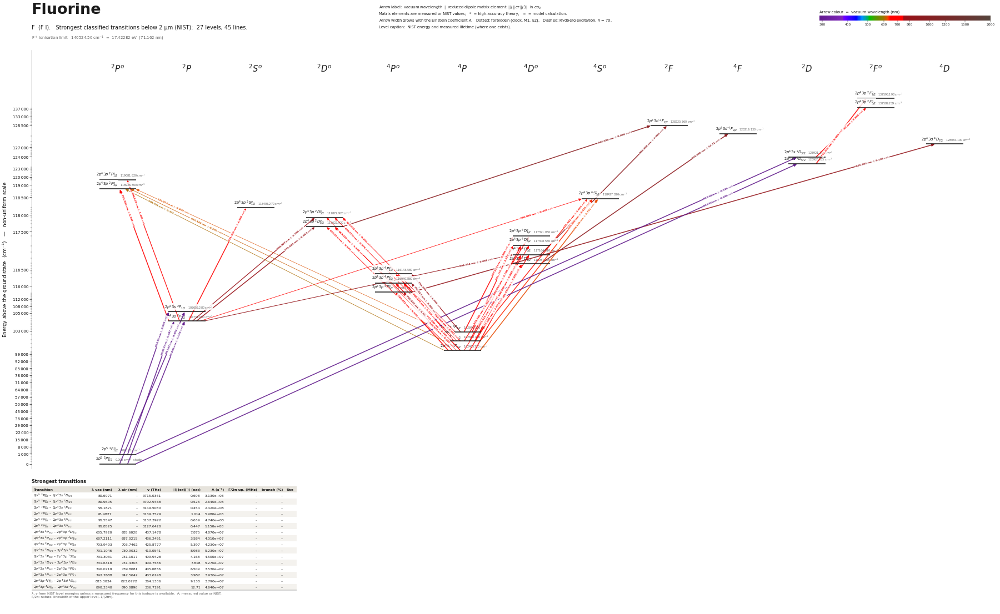

Fluorine energy level diagram
Energy levels and transitions of neutral fluorine (F I): the 45 strongest classified lines below 2 µm from the NIST Atomic Spectra Database and the 27 levels they connect, each line with its vacuum wavelength, frequency and, for 45 of them, the reduced dipole matrix element derived from the NIST transition rate. Lifetimes, hyperfine constants and isotope shifts from the literature have not been compiled for this element yet.
Hover a line or a level to isolate it, click to keep it selected. Scroll to zoom, drag to move.

Download: diagram (PDF) diagram (SVG) transitions (CSV) levels (CSV) source code

Strongest transitions of fluorine
| Transition | λ vac (nm) | λ air (nm) | ν (THz) | |⟨J‖er‖J′⟩| (ea₀) | A (s⁻¹) | Γ/2π up. (MHz) | branch (%) | Use |
|---|---|---|---|---|---|---|---|---|
| 2p5 2P°3/2 – 2p43s 2D5/2 | 80.6971 | – | 3715.0361 | 0.698 | 3.130e+08 | – | – | |
| 2p5 2P°1/2 – 2p43s 2D3/2 | 80.9605 | – | 3702.9468 | 0.526 | 2.640e+08 | – | – | |
| 2p5 2P°3/2 – 2p43s 2P1/2 | 95.1871 | – | 3149.5080 | 0.454 | 2.420e+08 | – | – | |
| 2p5 2P°3/2 – 2p43s 2P3/2 | 95.4827 | – | 3139.7579 | 1.014 | 5.980e+08 | – | – | |
| 2p5 2P°1/2 – 2p43s 2P1/2 | 95.5547 | – | 3137.3922 | 0.639 | 4.740e+08 | – | – | |
| 2p5 2P°1/2 – 2p43s 2P3/2 | 95.8525 | – | 3127.6420 | 0.447 | 1.150e+08 | – | – | |
| 2p43s 4P5/2 – 2p43p 4D°7/2 | 685.7920 | 685.6028 | 437.1478 | 7.875 | 4.870e+07 | – | – | |
| 2p43s 4P1/2 – 2p43p 4D°1/2 | 687.2111 | 687.0215 | 436.2451 | 3.584 | 4.010e+07 | – | – | |
| 2p43s 2P3/2 – 2p43p 2P°3/2 | 703.9403 | 703.7462 | 425.8777 | 5.397 | 4.230e+07 | – | – | |
| 2p43s 2D5/2 – 2p43p 2F°7/2 | 731.1046 | 730.9032 | 410.0541 | 8.983 | 5.230e+07 | – | – | |
| 2p43s 2P3/2 – 2p43p 2S°1/2 | 731.3031 | 731.1017 | 409.9428 | 4.168 | 4.500e+07 | – | – | |
| 2p43s 2D3/2 – 2p43p 2F°5/2 | 731.6318 | 731.4303 | 409.7586 | 7.818 | 5.270e+07 | – | – | |
| 2p43s 4P5/2 – 2p43p 4P°5/2 | 740.0719 | 739.8681 | 405.0856 | 6.509 | 3.530e+07 | – | – | |
| 2p43s 4P3/2 – 2p43p 4P°1/2 | 742.7688 | 742.5642 | 403.6148 | 3.987 | 3.930e+07 | – | – | |
| 2p43p 4P°5/2 – 2p43d 4D7/2 | 823.3034 | 823.0772 | 364.1336 | 9.138 | 3.790e+07 | – | – | |
| 2p43p 4D°7/2 – 2p43d 4F9/2 | 890.3340 | 890.0896 | 336.7191 | 12.71 | 4.640e+07 | – | – |
λ, ν from NIST level energies unless a measured frequency for this isotope is available. A: measured value or NIST. Γ/2π: natural linewidth of the upper level, 1/(2πτ).
Listed F transitions below 2 µm
| Lower level | Upper level | λ vacuum (nm) | λ air (nm) | ν (THz) | Type | |⟨J‖er‖J′⟩| (ea₀) | A (s⁻¹) | Branching (%) | Source of matrix element / A |
|---|---|---|---|---|---|---|---|---|---|
| 2p5 2P°3/2 | 2p43s 2D5/2 | 80.6971 | – | 3715.0361 | E1 | 0.698 NIST | 3.130e+08 NIST | – | NIST ASD (accuracy B) |
| 2p5 2P°1/2 | 2p43s 2D3/2 | 80.9605 | – | 3702.9468 | E1 | 0.526 NIST | 2.640e+08 NIST | – | NIST ASD (accuracy B) |
| 2p5 2P°3/2 | 2p43s 2P1/2 | 95.1871 | – | 3149.5080 | E1 | 0.454 NIST | 2.420e+08 NIST | – | NIST ASD (accuracy B+) |
| 2p5 2P°3/2 | 2p43s 2P3/2 | 95.4827 | – | 3139.7579 | E1 | 1.014 NIST | 5.980e+08 NIST | – | NIST ASD (accuracy B+) |
| 2p5 2P°1/2 | 2p43s 2P1/2 | 95.5547 | – | 3137.3922 | E1 | 0.639 NIST | 4.740e+08 NIST | – | NIST ASD (accuracy B+) |
| 2p5 2P°1/2 | 2p43s 2P3/2 | 95.8525 | – | 3127.6420 | E1 | 0.447 NIST | 1.150e+08 NIST | – | NIST ASD (accuracy B+) |
| 2p43s 4P5/2 | 2p43p 2P°3/2 | 604.9208 | 604.7533 | 495.5896 | E1 (intercombination) | 0.321 NIST | 2.360e+05 NIST | – | NIST ASD (accuracy C) |
| 2p43s 4P3/2 | 2p43p 2P°3/2 | 615.1439 | 614.9737 | 487.3534 | E1 (intercombination) | 0.295 NIST | 1.900e+05 NIST | – | NIST ASD (accuracy C) |
| 2p43s 4P1/2 | 2p43p 2P°3/2 | 621.2562 | 621.0843 | 482.5585 | E1 (intercombination) | 0.209 NIST | 9.200e+04 NIST | – | NIST ASD (accuracy C) |
| 2p43s 4P5/2 | 2p43p 4S°3/2 | 624.1375 | 623.9649 | 480.3308 | E1 | 3.731 NIST | 2.900e+07 NIST | – | NIST ASD (accuracy C+) |
| 2p43s 4P3/2 | 2p43p 4S°3/2 | 635.0263 | 634.8507 | 472.0946 | E1 | 3.425 NIST | 2.320e+07 NIST | – | NIST ASD (accuracy C+) |
| 2p43s 4P1/2 | 2p43p 4S°3/2 | 641.5422 | 641.3649 | 467.2997 | E1 | 2.663 NIST | 1.360e+07 NIST | – | NIST ASD (accuracy C+) |
| 2p43s 4P5/2 | 2p43p 2D°3/2 | 646.5290 | 646.3504 | 463.6953 | E1 (intercombination) | 0.145 NIST | 3.970e+04 NIST | – | NIST ASD (accuracy C) |
| 2p43s 4P5/2 | 2p43p 2D°5/2 | 657.1507 | 656.9692 | 456.2005 | E1 (intercombination) | 0.570 NIST | 3.860e+05 NIST | – | NIST ASD (accuracy C+) |
| 2p43s 4P3/2 | 2p43p 2D°3/2 | 658.2204 | 658.0386 | 455.4591 | E1 (intercombination) | 0.376 NIST | 2.510e+05 NIST | – | NIST ASD (accuracy C+) |
| 2p43s 4P1/2 | 2p43p 2D°3/2 | 665.2236 | 665.0399 | 450.6642 | E1 (intercombination) | 0.450 NIST | 3.490e+05 NIST | – | NIST ASD (accuracy C+) |
| 2p43s 4P3/2 | 2p43p 2D°5/2 | 669.2330 | 669.0482 | 447.9643 | E1 (intercombination) | 1.138 NIST | 1.460e+06 NIST | – | NIST ASD (accuracy C) |
| 2p43s 4P5/2 | 2p43p 4D°3/2 | 671.0126 | 670.8274 | 446.7762 | E1 | 0.806 NIST | 1.090e+06 NIST | – | NIST ASD (accuracy C+) |
| 2p43s 4P5/2 | 2p43p 4D°5/2 | 677.5848 | 677.3978 | 442.4427 | E1 | 2.974 NIST | 9.600e+06 NIST | – | NIST ASD (accuracy C+) |
| 2p43s 4P3/2 | 2p43p 4D°1/2 | 679.7399 | 679.5523 | 441.0400 | E1 | 1.351 NIST | 5.890e+06 NIST | – | NIST ASD (accuracy C+) |
| 2p43s 4P3/2 | 2p43p 4D°3/2 | 683.6148 | 683.4262 | 438.5400 | E1 | 3.708 NIST | 2.180e+07 NIST | – | NIST ASD (accuracy C+) |
| 2p43s 4P5/2 | 2p43p 4D°7/2 | 685.7920 | 685.6028 | 437.1478 | E1 | 7.875 NIST | 4.870e+07 NIST | – | NIST ASD (accuracy C+) |
| 2p43s 4P1/2 | 2p43p 4D°1/2 | 687.2111 | 687.0215 | 436.2451 | E1 | 3.584 NIST | 4.010e+07 NIST | – | NIST ASD (accuracy C+) |
| 2p43s 4P3/2 | 2p43p 4D°5/2 | 690.4375 | 690.2471 | 434.2065 | E1 | 5.849 NIST | 3.510e+07 NIST | – | NIST ASD (accuracy C+) |
| 2p43s 4P1/2 | 2p43p 4D°3/2 | 691.1719 | 690.9813 | 433.7451 | E1 | 3.673 NIST | 2.070e+07 NIST | – | NIST ASD (accuracy C+) |
| 2p43s 2P3/2 | 2p43p 2P°1/2 | 696.8267 | 696.6346 | 430.2253 | E1 | 1.485 NIST | 6.600e+06 NIST | – | NIST ASD (accuracy C) |
| 2p43s 2P3/2 | 2p43p 2P°3/2 | 703.9403 | 703.7462 | 425.8777 | E1 | 5.397 NIST | 4.230e+07 NIST | – | NIST ASD (accuracy C) |
| 2p43s 2P3/2 | 2p43p 4S°3/2 | 730.0991 | 729.8980 | 410.6188 | E1 (intercombination) | 0.459 NIST | 2.740e+05 NIST | – | NIST ASD (accuracy C) |
| 2p43s 2D5/2 | 2p43p 2F°7/2 | 731.1046 | 730.9032 | 410.0541 | E1 | 8.983 NIST | 5.230e+07 NIST | – | NIST ASD (accuracy C+) |
| 2p43s 2P3/2 | 2p43p 2S°1/2 | 731.3031 | 731.1017 | 409.9428 | E1 | 4.168 NIST | 4.500e+07 NIST | – | NIST ASD (accuracy C+) |
| 2p43s 2D3/2 | 2p43p 2F°5/2 | 731.6318 | 731.4303 | 409.7586 | E1 | 7.818 NIST | 5.270e+07 NIST | – | NIST ASD (accuracy C+) |
| 2p43s 4P5/2 | 2p43p 4P°3/2 | 733.3975 | 733.1955 | 408.7721 | E1 | 4.341 NIST | 2.420e+07 NIST | – | NIST ASD (accuracy C) |
| 2p43s 4P5/2 | 2p43p 4P°5/2 | 740.0719 | 739.8681 | 405.0856 | E1 | 6.509 NIST | 3.530e+07 NIST | – | NIST ASD (accuracy C) |
| 2p43s 4P3/2 | 2p43p 4P°1/2 | 742.7688 | 742.5642 | 403.6148 | E1 | 3.987 NIST | 3.930e+07 NIST | – | NIST ASD (accuracy C) |
| 2p43s 4P3/2 | 2p43p 4P°3/2 | 748.4783 | 748.2723 | 400.5359 | E1 | 2.318 NIST | 6.490e+06 NIST | – | NIST ASD (accuracy C+) |
| 2p43s 4P1/2 | 2p43p 4P°1/2 | 751.6988 | 751.4919 | 398.8199 | E1 | 1.656 NIST | 6.540e+06 NIST | – | NIST ASD (accuracy C) |
| 2p43s 4P3/2 | 2p43p 4P°5/2 | 755.4314 | 755.2234 | 396.8494 | E1 | 3.371 NIST | 8.900e+06 NIST | – | NIST ASD (accuracy C+) |
| 2p43s 4P1/2 | 2p43p 4P°3/2 | 757.5471 | 757.3385 | 395.7410 | E1 | 3.366 NIST | 1.320e+07 NIST | – | NIST ASD (accuracy C) |
| 2p43s 2P3/2 | 2p43p 2D°3/2 | 760.9267 | 760.7173 | 393.9833 | E1 | 2.798 NIST | 9.000e+06 NIST | – | NIST ASD (accuracy C+) |
| 2p43s 2P3/2 | 2p43p 2D°5/2 | 775.6827 | 775.4692 | 386.4885 | E1 | 6.681 NIST | 3.230e+07 NIST | – | NIST ASD (accuracy C+) |
| 2p43s 2P3/2 | 2p43p 4D°5/2 | 804.3137 | 804.0926 | 372.7308 | E1 (intercombination) | 1.484 NIST | 1.430e+06 NIST | – | NIST ASD (accuracy C+) |
| 2p43p 4P°5/2 | 2p43d 4D7/2 | 823.3034 | 823.0772 | 364.1336 | E1 | 9.138 NIST | 3.790e+07 NIST | – | NIST ASD (accuracy C+) |
| 2p43p 4D°7/2 | 2p43d 4F9/2 | 890.3340 | 890.0896 | 336.7191 | E1 | 12.71 NIST | 4.640e+07 NIST | – | NIST ASD (accuracy C+) |
| 2p43p 4D°5/2 | 2p43d 2F7/2 | 904.4576 | 904.2094 | 331.4610 | E1 (intercombination) | 7.980 NIST | 2.180e+07 NIST | – | NIST ASD (accuracy C+) |
| 2p43p 2D°5/2 | 2p43d 2F7/2 | 943.6241 | 943.3653 | 317.7033 | E1 | 8.830 NIST | 2.350e+07 NIST | – | NIST ASD (accuracy C+) |
Reduced dipole matrix elements follow the convention A = ω³|d|²/(3πε₀ħc³(2J′+1)), with J′ the upper level. Tags show where a number comes from: measured, NIST compilation, high-accuracy theory, or a model calculation.
F energy levels
| Level | Energy (cm⁻¹) | J | Parity | Lifetime | gJ | Hyperfine A (MHz) | Hyperfine B (MHz) | Lifetime source | Hyperfine source |
|---|---|---|---|---|---|---|---|---|---|
| 2p5 2P°3/2 | 0.000 | 3/2 | odd | stable | – | – | – | – | – |
| 2p5 2P°1/2 | 404.141 | 1/2 | odd | – | – | – | – | – | – |
| 2p43s 4P5/2 | 102405.710 | 5/2 | even | – | – | – | – | – | – |
| 2p43s 4P3/2 | 102680.440 | 3/2 | even | – | – | – | – | – | – |
| 2p43s 4P1/2 | 102840.380 | 1/2 | even | – | – | – | – | – | – |
| 2p43s 2P3/2 | 104731.050 | 3/2 | even | – | – | – | – | – | – |
| 2p43s 2P1/2 | 105056.280 | 1/2 | even | – | – | – | – | – | – |
| 2p43p 4P°5/2 | 115917.910 | 5/2 | odd | – | – | – | – | – | – |
| 2p43p 4P°3/2 | 116040.880 | 3/2 | odd | – | – | – | – | – | – |
| 2p43p 4P°1/2 | 116143.580 | 1/2 | odd | – | – | – | – | – | – |
| 2p43p 4D°7/2 | 116987.390 | 7/2 | odd | – | – | – | – | – | – |
| 2p43p 4D°5/2 | 117164.010 | 5/2 | odd | – | – | – | – | – | – |
| 2p43p 4D°3/2 | 117308.560 | 3/2 | odd | – | – | – | – | – | – |
| 2p43p 4D°1/2 | 117391.950 | 1/2 | odd | – | – | – | – | – | – |
| 2p43p 2D°5/2 | 117622.920 | 5/2 | odd | – | – | – | – | – | – |
| 2p43p 2D°3/2 | 117872.920 | 3/2 | odd | – | – | – | – | – | – |
| 2p43p 2S°1/2 | 118405.270 | 1/2 | odd | – | – | – | – | – | – |
| 2p43p 4S°3/2 | 118427.820 | 3/2 | odd | – | – | – | – | – | – |
| 2p43p 2P°3/2 | 118936.800 | 3/2 | odd | – | – | – | – | – | – |
| 2p43p 2P°1/2 | 119081.820 | 1/2 | odd | – | – | – | – | – | – |
| 2p43s 2D5/2 | 123920.265 | 5/2 | even | – | – | – | – | – | – |
| 2p43s 2D3/2 | 123921.152 | 3/2 | even | – | – | – | – | – | – |
| 2p43d 4D7/2 | 128064.100 | 7/2 | even | – | – | – | – | – | – |
| 2p43d 4F9/2 | 128219.130 | 9/2 | even | – | – | – | – | – | – |
| 2p43d 2F7/2 | 128220.360 | 7/2 | even | – | – | – | – | – | – |
| 2p43p 2F°5/2 | 137589.229 | 5/2 | odd | – | – | – | – | – | – |
| 2p43p 2F°7/2 | 137598.198 | 7/2 | odd | – | – | – | – | – | – |
F⁺ ionisation limit 140524.50 cm⁻¹ = 17.42282 eV (71.162 nm)
Sources
Atoms with measured data
- Lithium-632 levels, 85 lines
- Lithium-732 levels, 85 lines
- Beryllium-915 levels, 24 lines
- Sodium-2336 levels, 106 lines
- Magnesium-2418 levels, 61 lines
- Magnesium-2518 levels, 61 lines
- Potassium-3934 levels, 84 lines
- Potassium-4034 levels, 84 lines
- Potassium-4134 levels, 84 lines
- Calcium-4035 levels, 61 lines
- Calcium-4335 levels, 61 lines
- Rubidium-8536 levels, 94 lines
- Rubidium-8736 levels, 94 lines
- Strontium-8740 levels, 70 lines
- Strontium-8840 levels, 70 lines
- Caesium-13331 levels, 79 lines
- Barium-13744 levels, 89 lines
- Barium-13844 levels, 89 lines
- Dysprosium-16339 levels, 55 lines
- Dysprosium-16439 levels, 55 lines
- Ytterbium-17118 levels, 26 lines
- Ytterbium-17418 levels, 26 lines